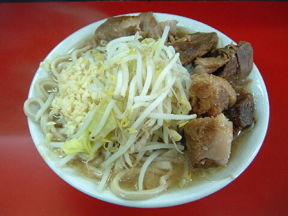
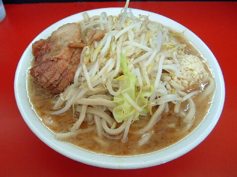
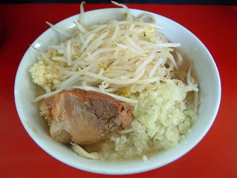
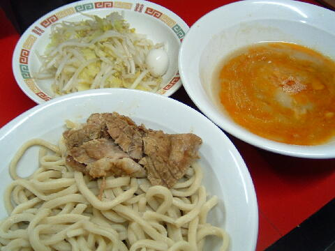
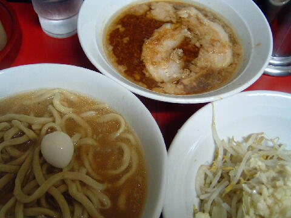

川崎市 多摩区 登戸 1770
日
月〜金 18：00〜24：00
土・祝 11：00〜17：00
店員は、中年男性２名。
オヤジ達の力の抜けた接客が、ジロリアンにはたまらなく好感触。
コショウ、唐辛子、胡麻。あと、カレーパウダー（ギャバン）が１か所のみにある。
レンゲ有、ティッシュ有。
BGMは、無。
トッピングは、二郎と同じ。
「ラーメン 蓮爾」でヤフー検索
「ラーメン 蓮爾」でヤフーリアルタイム検索
「ラーメン 蓮爾」でグーグル検索

小ラーメン豚入り ニンニク
麺は、ほとんどうどんの極太麺。
ぶたは、大きいぶつ切りの豚。二郎や凛のようで美味い。
スープは、カネシを使用した薄め豚骨醤油。大きめの背油プカプカ。
ヤサイは、モヤシ8：キャベツ2の割合。程好い茹で加減。
ニンニクは、大粒の生ニンニク。

蓮エビ小 ニンニク
カエシと桜エビをすりつぶしたものが混ぜられたカエシになる。
少し高目だが、エビの風味が乾燥エビよりもはるかに豊かで、エビの粒が極太麺にからまってきて美味い。

たま小ラーメン ニンニク
魚系粉末が加えられたスープに、刻み玉葱が加わる。

小つけ麺 ニンニク
トッピングはラーメンと同じ。
つけ汁はラー油の入った辛味のきいタレ。ニンニクはこの中。
麺の丼には、豚と極太麺。
野菜はコールしなくとも別皿。ウズラの卵一個。

蓮エビ小つけ麺（あつもり） ニンニク
上記の写真と比較して、少々配分は変わった様だ。
あつもりだと麺に素のスープが加わる。
また今回の豚は、厚切り大ぶりのバラが２枚であった。
ＰＣ店